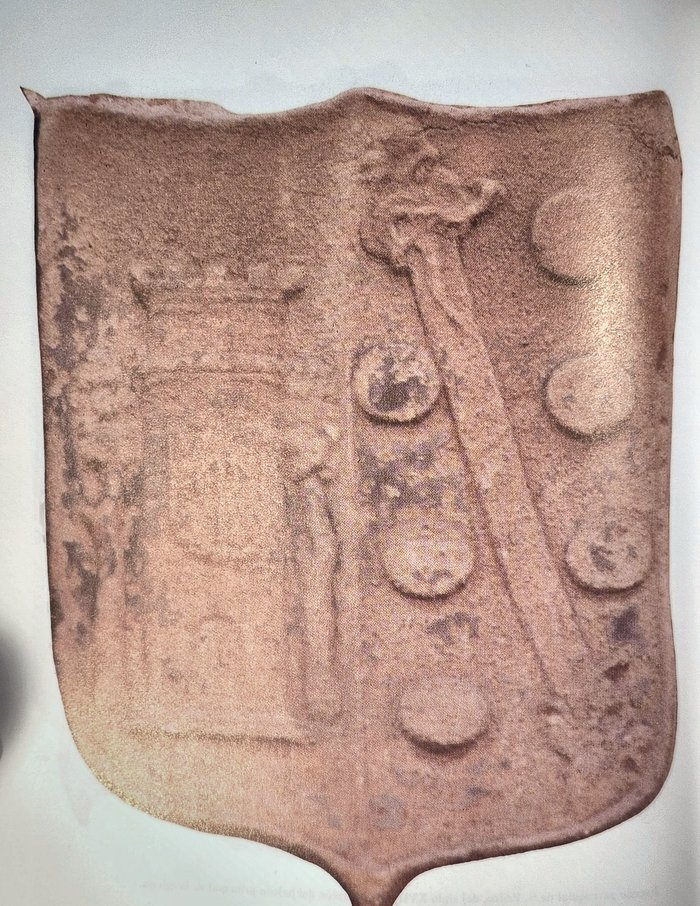
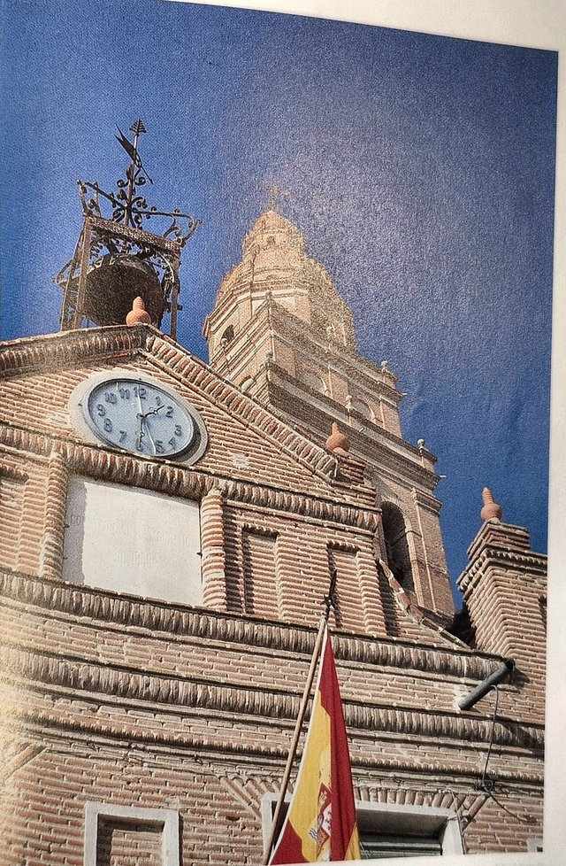

Casas blasonadas y edificios civiles
Las casas de hidalgos con escudo, la casa de los diezmos, el Ayuntamiento, el hospital del Buen Pastor y un patio de guijarros: la arquitectura civil de la villa, casa por casa, según Adolfo M. Araújo.

En 1991 Adolfo M. Araújo y González, de la Asociación Amigos del Patrimonio Cultural de Alaejos, dedicó un capítulo de Alaejos, apuntes histórico-artísticos a la arquitectura civil de la villa. Es, hasta ahora, la única relación publicada de las casas blasonadas con su dirección, y la que permite empezar a responder a lo que quedaba pendiente en La Plaza Mayor. Esta página la recoge casa por casa. Las direcciones son las de 1991, y algunas calles han cambiado de nombre desde entonces.
Araújo distinguía dos clases de casas: las que valen por su construcción, representativa de una época, sobre todo de los siglos XVII y XVIII, y las que valen por su papel histórico. Contaba entre doce y trece edificios con escudo en la fachada y dieciséis escudos de piedra, del siglo XVI a finales del XVIII o principios del XIX. Otros habían desaparecido «como consecuencia del comercio ilícito o de la ignorancia y derribos inmisericordes», sobre todo en el siglo XIX y comienzos del XX. Eran las casas solariegas de hidalgos y escuderos ennoblecidos, que por su estado tenían, entre otros privilegios, el de poner su escudo de armas en la fachada (Araújo, 1991, pág. 33).
Las casas blasonadas
Casa del Inquisidor
Calle Ramón y Cajal, 6. También llamada Casa del Magistrado. Tiene dos plantas, con la fachada original de ladrillo y sillarejo, hoy enfoscada, huecos con molduras, balcones de forja, gárgolas de cinc y dos escudos del siglo XVI. Es austera por dentro y por fuera, y conserva unas arcadas de granito a modo de claustro y arquerías de ladrillo antiguo (pág. 33).
Casa del Marqués de Gastañaga
Calle Ramón y Cajal, 7. La casa-palacio ha sufrido ampliaciones y la primitiva fue casi demolida. Tiene dos plantas y bodega, fachada enfoscada, un escudo del siglo XVII y grandes ventanales con rejería de forja. La casa primitiva tenía portón clásico y zaguán, y un patio cuadrangular de empedrado fino con columnas dóricas de piedra que sostenían un corredor; alrededor había asientos de piedra, y lo adornaban enredaderas y una palmera. El marquesado de Gastañaga se concedió el 25 de febrero de 1686 a Francisco Antonio de Agurto y Salcedo, gobernador de Flandes y virrey de Cataluña, caballero de Alcántara (págs. 33-34).
Casa de los Beneficiados de Santa María
Plaza Mayor, 18. Fachada de ladrillo y mampostería con elementos neoclásicos, rematada por un frontón con las armas de la iglesia de Santa María: una vara florida de azucenas que sale de un jarrón. Unos adornos de barro cocido hacen de crestería. Desde su balconada corrida de forja, del siglo XVIII, los beneficiados de Santa María presenciaban las fiestas de la plaza. Se cuenta que, en tiempos, los cabildos de las dos parroquias usaban el balcón de San Pedro y que, al desavenirse, cada uno quiso tener el suyo. La fachada se parece a la del Ayuntamiento y, con la de San Pedro, enmarca la plaza (pág. 34; véase La Plaza Mayor).
Casa de los Regidores
Calle Calvo Sotelo, 11. Edificio del siglo XVIII de ladrillo prensado, con dos escudos y tres balcones con hierros de forja de igual dibujo. Su cornisa es, quizá, la más bella de los edificios civiles del pueblo. Antes de su restauración tenía unos artesonados de yeso labrados a punta de navaja que podían tener reminiscencias moriscas (pág. 34).
Casa del Obispo
Calle Calvo Sotelo, 20. Casa de dos plantas, muy deteriorada en 1991 por estar deshabitada. La planta baja era de tapial, propio de los siglos XVI y XVII, enfoscada con mortero, y la cornisa corrida de ladrillo moldurado a tizón y a pico; tiene una buena reja de balcón de forja del siglo XVII. En la fachada campean, en piedra, las armas eclesiásticas del obispo Juan Fernández Vadillo, colegial de Santa Cruz de Valladolid, canónigo de Palencia y obispo de Cuenca. La casa había sido de su madre, doña Antonia, de quien la heredó por testamento otorgado en Alaejos el 11 de enero de 1563 ante el escribano real de millones Pedro Castrejón, con Agustín Moreno, Juan Carrasco y Cristóbal Ruano el Viejo como testigos. Tiene grandes bodegas con arcos de ladrillo de refuerzo, que hasta hacía poco se habían usado para elaborar y guardar vino (págs. 34-35).
Es la misma casa que Araújo situó en 1995 en la calle Fortaleza y Plaza, 20, con su escudo de capelo y cruz de Calatrava (véase Escudo, bandera y distinciones). La calle Calvo Sotelo de 1991 es, por tanto, la de Fortaleza y Plaza, la que iba del castillo a la Plaza Mayor.
Casa de los Delgado
Calle General Sanjurjo, 7-9. Del siglo XVIII, de dos plantas, con escudo de piedra labrada en el lateral, rejas de forja en las ventanas bajas y balconeras con barrotes de la época en la primera planta. Los muros son de ladrillo aplantillado, con una excelente obra de ladrillo visto de juntas rehundidas y cornisa corrida de ladrillos moldurados a tizón. Fue de Manuel Luis, Leandro y Tomás Delgado Díaz, hidalgos cuya ejecutoria de hidalguía se remonta a 1770 (pág. 35).
Casa de los Sánchez
Calle General Sanjurjo, 6-8. Del siglo XVII, de dos plantas, con muros de ladrillo aplantillado a matajunta, ventanas con reja de forja lisa, balconeras de barrotes adornados y cornisa corrida de ladrillos moldurados a tizón y a sardinel. Quizá la habitó Catalina Sánchez, que ganó ejecutoria de hidalguía en la Real Chancillería de Valladolid en 1516, y después García Sánchez Hidalgo, que volvió a ganarla en 1540 (pág. 35).
Casa del corro de Gonzala Santana
Casa blasonada con escudo del siglo XVII, en el corro que lleva el nombre de Gonzala Santana. Recién restaurada en 1991: dos plantas y bodega, fachada enfoscada con el escudo, carpintería de madera y rejería de forja (pág. 35).
Casa del Rincón
Calle Lucas Martín, 16. Se alza en el corro de Lucas Martín y había sido restaurada poco antes de 1991. Fue de los padres jesuitas —hay quien dice que fue beaterio o convento—, como indicaba un escudo de pizarra muy deteriorado con las armas de la Compañía. Tenía una capilla con varios altares y esculturas de la escuela castellana de los siglos XVII o XVIII, una de ellas de san Ignacio de Loyola. Una lápida de mármol blanco, bajo un escudo de armas gentilicias, recuerda la estancia en la localidad del padre Hoyos en 1730 (pág. 35).
Casa de la Zilla
Calle Zabacos, 28. Dos plantas y bodega, muros de carga de ladrillo y tapial y cubierta de teja árabe, con arcos de medio punto rehundidos en forma de veneras, rejería de balcones de cierto interés y la aldaba de la puerta principal. Araújo la tenía probablemente por la cilla de Alaejos y Valdefuentes, donde se recogían los diezmos en grano y vino que cada feligrés pagaba a los cabildos de Santa María y San Pedro (págs. 35-36). Su historia la contó José Ojeda Nieto en 2005 (véase Los diezmos y la cilla).
Otros edificios de interés
El Ayuntamiento


Plaza Mayor, 1. Edificio de dos plantas en el extremo occidental de la plaza, con una amplia balconada en la fachada. Es de ladrillo visto, con un tercer cuerpo formado por dos torretas laterales de remate ondulado que flanquean un templete. En su frontón triangular se colocó el reloj de la villa y una lápida de mármol blanco que dice «Constitución democrática de 1869», que quizá sustituye o tapa otra con el año o el rey de la construcción, o el hueco de un escudo real. Lo corona un castillete de forja que sostiene la campana. Tiene rejería de forja de interés en los ventanales que dan a la calle Lucas Martín (pág. 36; su historia, en La Plaza Mayor).
El antiguo hospital del Buen Pastor
Plaza de Santa María. Araújo lo describía como un edificio del siglo XVII, recién restaurado en 1991 para centro de salud de la comarca. Los muros de carga son de adobe con verdugadas de ladrillo y estructura horizontal de madera, con cubierta de teja árabe. Sobre la puerta, un tejadillo a tres aguas sostenido por dos columnas dóricas de piedra blanca de Velilla cobija una hornacina con un Cristo crucificado antiguo; a la izquierda, un azulejo dice «Hospital del Buen Pastor». En él celebró su primera misa fray Martín Ignacio de Loyola, sobrino nieto de san Ignacio, que dio dos veces la vuelta al mundo en el siglo XVI y naufragó tres veces (págs. 36-37). La historia del hospital, de los Hermanos del Buen Pastor a la Real Sociedad Caritativo-Económica y al centro de salud, está en Asociaciones y lugares de encuentro y en El siglo XVIII.
El patio de la Plaza Mayor, 3
Araújo lo tenía por una curiosa obra de decoración popular de principios del siglo XX: guijarros de distintos tamaños y colores forman figuras que imitan el artesonado del coro alto de Santa María, una silla gestatoria o trono pontificio y el escabel donde Felipe II apoyaba su pie gotoso, réplica del que se conserva en El Escorial. En 1991 sufría algún desperfecto, y pedía que se ayudara a sus dueños a conservarlo (pág. 38).
Lo que no se ha conservado
Araújo cerraba el capítulo con los dos edificios perdidos más importantes. El convento de San Francisco, en el pago de El Conventillo, fundado en el siglo XVI por Francisco de Fonseca para los franciscanos descalzos y arruinado en la Francesada (véase Siglos XVI y XVII). Y el castillo, del que describía el muro, el foso, la planta cuadrada de unos 60 metros de lado con cuatro torreones de unos 15 metros y las bóvedas de ladrillo de los subterráneos (pág. 38; véase El castillo).
Texto basado en Adolfo M. Araújo y González, «Arquitectura civil», en Alaejos, apuntes histórico-artísticos (Valladolid, Diputación, 1991), págs. 33-38, con autorización de los autores. Las fotografías proceden del mismo libro, que las atribuye en conjunto a Santiago Benito Cacho, Pedro Varela, Juan Pablo Mangas y el Archivo del Ayuntamiento.
Para seguir leyendo
- Adolfo M. Araújo y González, «Arquitectura civil», en Alaejos, apuntes histórico-artísticos (1991), y en los programas de fiestas «La heráldica municipal de Alaejos» (1971), «Las órdenes militares de caballería en la heráldica del estado noble de la villa de Alaejos» (1995) y «Nuestras piedras labradas artísticamente» (2010).
- Felipe de Perlines Carretero, «Casa del marqués de Gastañaga» (2012) y «Los escudos del obispo Vadillo» (2013).
- José Ojeda Nieto, «La casa de los diezmos, o cilla» (2005).
- Almudena Ojeda Torrero, «El convento de San Francisco de Alaejos» (2014).
- En esta web: La Plaza Mayor, Escudo, bandera y distinciones y el mapa.
Cómo citar esta página
Amigos de Alaejos, «Casas blasonadas y edificios civiles», https://www.amigosdealaejos.org/patrimonio/casas-blasonadas/ (revisión del 18/11/2026).